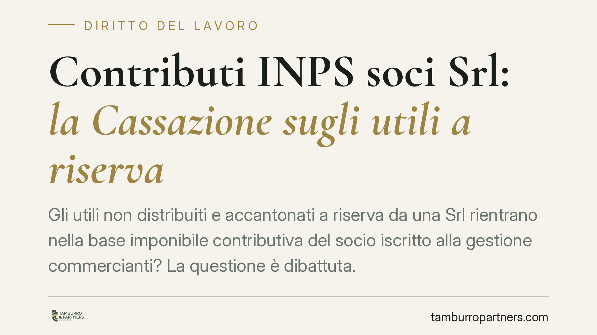

Contributi INPS soci Srl: la Cassazione sugli utili a riserva
Gli utili non distribuiti e accantonati a riserva da una Srl rientrano nella base imponibile contributiva del socio iscritto alla gestione commercianti? La questione è dibattuta. Un recente orientamento di legittimità distingue tra utile effettivamente percepito e utile trattenuto in società, con effetti rilevanti sull'onere probatorio dell'INPS. Vediamo i termini del problema e cosa conviene verificare.

Il quadro: perché la questione è controversa
La contribuzione alle gestioni artigiani e commercianti si calcola sul reddito d'impresa del socio. La disciplina di riferimento è l'art. 3-bis del D.L. 19 settembre 1992 n. 384, convertito con modificazioni nella L. 14 novembre 1992 n. 438, che àncora la base imponibile ai redditi d'impresa denunciati ai fini IRPEF.
Il nodo nasce dalla natura della Srl. A differenza delle società di persone, dove il reddito è imputato ai soci per trasparenza già per legge — a prescindere dall'effettiva distribuzione — la Srl è soggetta a IRES e gode di piena autonomia patrimoniale. L'utile, finché resta in società, non è reddito del socio.
Occorre essere chiari su un punto: la materia non è pacifica. Le Sezioni Unite (Cass. SU 20 agosto 2019 n. 21540) hanno affermato l'obbligo contributivo del socio di Srl che presti nella società un'attività lavorativa abituale e prevalente. Il tema oggetto di dibattito non è quindi *se* il socio-lavoratore debba contribuire, ma *su quale base* — cioè se rilevi anche l'utile trattenuto a riserva o soltanto quello effettivamente percepito.
Il discrimine: utile a riserva o regime di trasparenza
La linea di confine passa tra due situazioni.
Utile accantonato a riserva. Se l'assemblea delibera di non distribuire l'utile e lo destina a riserva, quel reddito non entra nella sfera patrimoniale del socio. Manca, in radice, un reddito imputabile alla persona fisica su cui parametrare il contributo. La logica è coerente con la struttura della Srl: l'utile diventa reddito del socio solo quando viene distribuito ed effettivamente percepito.
Regime di trasparenza fiscale. Diverso è il caso in cui la Srl abbia optato per la trasparenza. Per le Srl a ristretta base partecipate da persone fisiche rileva l'art. 116 TUIR (la cosiddetta piccola trasparenza), che imputa il reddito ai soci pro quota indipendentemente dalla percezione, sul modello delle società di persone. L'art. 115 TUIR riguarda invece la trasparenza tra società di capitali. In regime di trasparenza, quindi, il reddito è imputato al socio per legge e la base contributiva si allinea a quella imputazione.
L'onere della prova a carico dell'INPS
L'aspetto di maggiore interesse pratico riguarda la ripartizione dell'onere probatorio. Se l'ente previdenziale pretende contributi su utili non distribuiti, è tenuto a dimostrare i presupposti della pretesa: non basta il dato contabile dell'utile prodotto dalla società.
È un principio non banale. Sposta sull'INPS la dimostrazione che quell'utile sia, in concreto, entrato nella disponibilità del socio o sia comunque a lui imputabile per legge. L'accantonamento a riserva, di per sé, non genera automaticamente materia contributiva.
Il caveat: le distribuzioni mascherate
Un'avvertenza è d'obbligo. L'esclusione dell'utile a riserva non è una scorciatoia. Restano pienamente rilevanti — e potenzialmente contestabili — le distribuzioni occulte: prelievi non giustificati, restituzioni di finanziamenti soci privi di reale sostanza, benefici in natura non contabilizzati. In presenza di indici di distribuzione effettiva, la qualificazione formale dell'utile come "a riserva" non è sufficiente a schermare la posizione del socio.
Implicazioni pratiche
Per il socio-lavoratore di Srl iscritto alla gestione commercianti la distinzione ha effetti concreti sul quantum dovuto. Chi reinveste stabilmente gli utili in società ha argomenti per contestare pretese contributive fondate sul solo utile prodotto. Chi opera invece in trasparenza deve considerare l'imputazione per legge, a prescindere dalla distribuzione.
Cosa fare in concreto
- Verifica il regime fiscale della Srl. Accerta se sia in regime ordinario IRES o abbia optato per la trasparenza ex art. 116 TUIR: da qui dipende l'imputazione del reddito.
- Ricostruisci le delibere assembleari. Conserva i verbali che destinano gli utili a riserva; sono la prova documentale del mancato passaggio del reddito al socio.
- Controlla i flussi verso i soci. Prelievi, finanziamenti e restituzioni devono essere tracciati e giustificati, per prevenire contestazioni di distribuzione occulta.
- In caso di avviso di addebito, valuta i termini. Verifica motivazione e presupposti della pretesa e i tempi per l'opposizione, tenendo conto dell'onere probatorio gravante sull'ente.
- È opportuna una valutazione professionale della singola posizione prima di presentare istanze in autotutela o proporre opposizione.
---
*Contributo informativo a cura di Tamburro & Partners Avvocati. Non costituisce parere legale.*
Ogni storia di lavoro ha i suoi tempi.
Se gestisci HR e vuoi un confronto su contenzioso, ispezioni o licenziamenti, scrivi allo studio. Ti rispondiamo entro un giorno lavorativo.